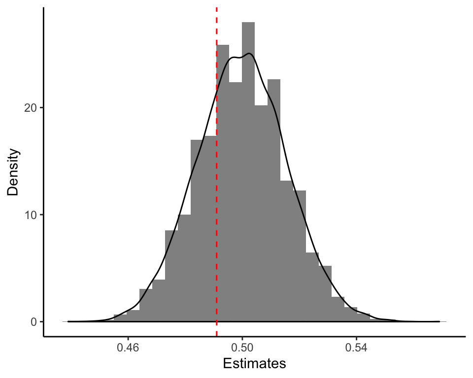
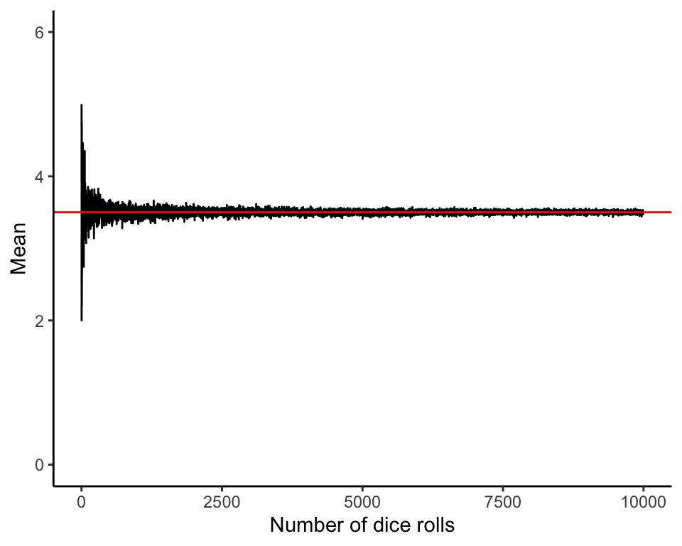
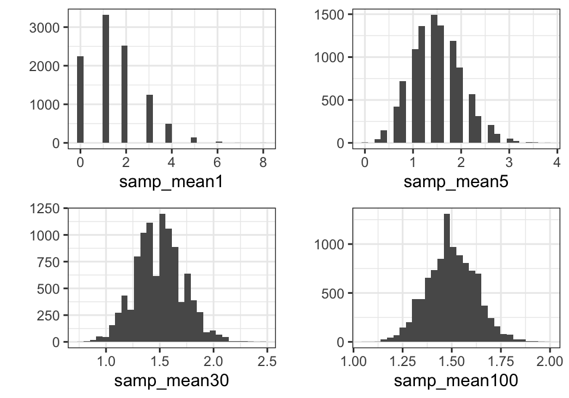

- Push problem sets to GitHub
- Office hours: Tuesdays 2:45pm to 3:45pm
- other admin stuff?
1/10/2020
How do we get from:
do() Operator and Causal EffectsTreatments (interventions) are represented by the \(do()\) operator
For example, \(do(x_0)\) holds \(X\) at \(x_0\) exogenously (\(x = x_0\))
The pre-intervention distribution: \(P(x, y, z)\)
Then, the ATE is defined as \(\mathbb{E}[Y\mid do(x_1)] - \mathbb{E}[Y\mid do(x_0)]\)
Identification: Can \(P(y\mid do(x))\) be estimated from data governed by the pre-intervention distribution \(P(x,y,z)\)?
OR can short-term factors like issue positions
What are these?
\(\theta\): An unknown value that describes a population relationship. The concept we want to estimate.
\(\widehat{\theta}(Y)\): A rule (i.e., function) for combining data to produce a numerical value for a population parameter (estimand);
\(\widehat{\theta}(Y=y)\): The numerical value(s) taken on by an estimator for a particular sample of data.
Estimators produce estimates. Under repeated random sampling, they produce many estimates.
Assuming repeated random sampling, we can calculate the uncertainty around our point estimates.
Under repeated sampling, we also have a distribution of an estimate: a sampling distribution (the probability distribution of a statistic).
| Estimand | Estimator | Sampling Distribution |
| \(\mathbb{E}(X) = \mu\) | \(\bar{X}_n = \frac{1}{n}\sum_{i=1}^n X_i\) | \(\bar{X}_n \sim \mathcal{N}(\mu,\frac{\sigma^2}{n})\) |
set.seed(01102020)
X <- rbinom(1000, 1, 0.5)
mean.estimator = function(X) {
# Calculate the size of the sample, n.
n <- length(X)
# Apply the estimator to the sample data.
mu.hat <- (1/n) * sum(X)
return(mu.hat)
}
# Estimate mean
mean.estimator(X)
## [1] 0.491
mu_samp <- replicate(10000, mean.estimator(rbinom(1000, 1, 0.5)))

Law of Large Numbers: If \(X_1,...,X_n\) are drawn independently from the distribution of \(X\) (randomly sampled), then the sample estimator for the mean converges in probability to the population average of \(X\)

Central Limit Theorem: The sampling distribution of the sample means approaches a Normal distribution as the sample size increases (no matter what the underlying population distribution is).

\(D_i\): Indicator of treatment intake for unit \(i\), where \(i = 1, ..., N\); for now, \(D_i \in \{0,1\}\).
\(Y_i\): Variable of interest, whose value is observed, which may be affected by the treatment.
Which of these are observed?
| \(Y = 1\) | \(Y = 0\) | |
| \(D = 1\) | \(\mathbb{E}[Y_i(1)|D_i = 1]\) | \(\mathbb{E}[Y_i(0)|D_i = 1]\) |
| \(D = 0\) | \(\mathbb{E}[Y_i(1)|D_i = 0]\) | \(\mathbb{E}[Y_i(0)|D_i = 0]\) |
Which of these are observed?
| \(Y = 1\) | \(Y = 0\) | |
| \(D = 1\) | \(\mathbb{E}[Y_i(1)|D_i = 1]\) | \(\mathbb{E}[Y_i(0)|D_i = 1]\) |
| \(D = 0\) | \(\mathbb{E}[Y_i(1)|D_i = 0]\) | \(\mathbb{E}[Y_i(0)|D_i = 0]\) |
| Group | Sample Size | Avg Health Status | Std Error |
| Hospital | 7,774 | 3.21 | 0.014 |
| No Hospital | 90,049 | 3.93 | 0.003 |
Are the following equalities always true?